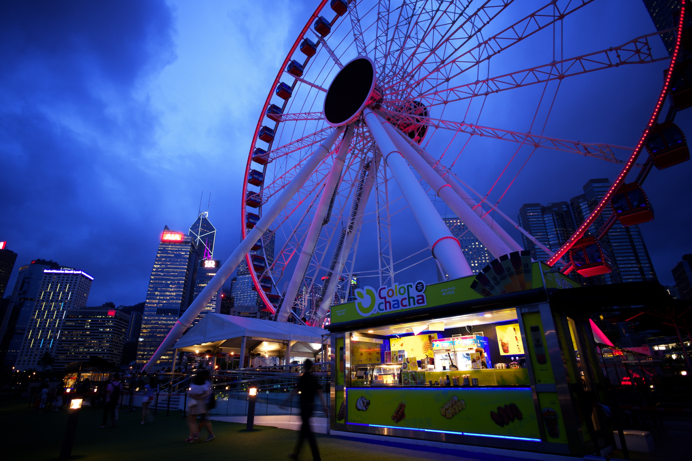
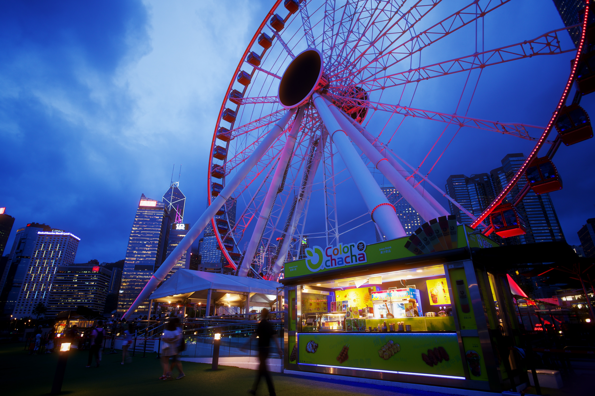

THE AUTHENTIC PROCESS
Halation starts with light passing through film.Compare what happens when that history matters.


LOOK CLOSER
Select a detail to bring it into view. Both sides always move together.
Dark Melon models light passing through the film’s color layers. The red sign produces a red halo; white light produces an orange halo. The glow carries the color of its source.
Even for this SDR rendition, Dark Melon uses the source’s HDR information. It distinguishes the intense LED sign from the softer window light, leaving the windows without halation. In these alternatives, both white regions receive glow.
Alternative 2 shows artifacts around the glow at high-contrast boundaries. Inspect the edges of the illuminated lettering and the structures around it.
Film’s layers absorb different wavelengths. Blue light should not receive the same warm backscatter halo as red or white light. Both alternatives add warm halation around the blue LED; Dark Melon accounts for the layer-dependent response.
Dark Melon reduces exposure before tone mapping, so bright sources can remain bright. Alternative 2’s vignette looks like a black overlay in this export: it pulls even the highlights below white.
In Alternative 1, the halation composite gives dark areas a fluorescent yellow cast. Look inside the wheel and around the dark structures beside the lights.